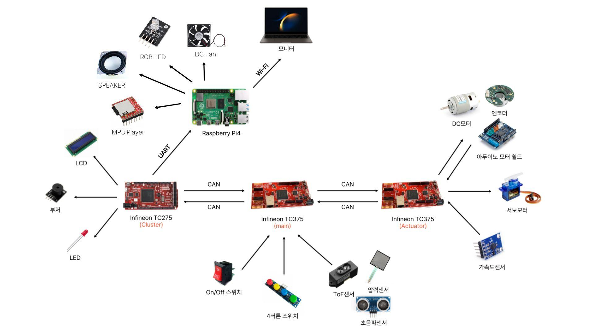

| A | B | C | D | E | F | G | H | I | J | K | L | M | N | O | P | Q | R | S | T | U | V | W | X | Y | |
|---|---|---|---|---|---|---|---|---|---|---|---|---|---|---|---|---|---|---|---|---|---|---|---|---|---|
1 | |||||||||||||||||||||||||
2 | |||||||||||||||||||||||||
3 | 시스템 요구사항 - MAIN(TC375#1) | 통신 아키텍쳐 표 | 운전자 탑승 여부 판단 시스템 요구사항 명세 | 운전자 탑승 여부 판단 시스템 요구사항 | |||||||||||||||||||||
4 | ID | INPUT | DETAIL | OUTPUT | 통신 구간 | 송신 ECU | 수신 ECU | 통신 방식 | 전송 데이터 | 전송 목적 | 통신 특성 | 목적 | 본 기능은 운전석에 설치된 초음파 센서, ToF 센서, 압력 센서의 측정값을 이용하여 운전자의 탑승 여부를 판정하기 위한 것이다. 시스템은 각 센서값을 물리 단위로 변환하고, 구간별 신뢰도 점수로 환산한 뒤, 이를 종합하여 최종적으로 다음 3가지 상태 중 하나를 출력한다. · DRIVER_PRESENT : 운전자 탑승 · DRIVER_ABSENT : 운전자 부재 | 요구사항 ID | 요구사항명 | 상세 설명 | |||||||||
5 | 1. 감지 | CLU → RPi | CLU (TC275) | RPi | UART | 경고 종류, 제동 종류, 기어 상태, 도어 상태, 운전자 유무, 차량 속도 | 이벤트 로그 저장, 상태 조회, 웹 모니터링 화면 구성 | 저속·단순 구조의 직렬 통신, 모니터링/기록용, 상세 포맷은 UART 데이터 형식 정의 참조 | 센서 | 1. 초음파 센서 | · 설치 위치: 운전석 천장 중앙부 · 측정 방향: 수직 하향 · 측정 대상: 운전자의 머리 또는 상체 상단 · 사용 단위: cm | SR-DRV-01 | 센서 구성 | 시스템은 운전자 탑승 여부 판단을 위해 운전석 천장부 초음파 센서, 핸들 부착 ToF 센서, 시트 부착 압력 센서를 사용해야 한다. | |||||||||||
6 | FR-DET-01 | 압력센서 값 ToF 거리값 초음파 거리값 | 좌석 하중(압력) + 좌석 상부 인체 감지(ToF, 초음파)를 가중 점수로 조합하여 운전자 존재/부재를 판정한다. 판정 방식: WS = 0.3×RU + 0.3×RT + 0.4×RP (각 0~5점) WS > 1.0 → SEATED, WS ≤ 1.0 → ABSENT 3회 연속 동일 결과 시 확정 (30ms) | 운전자 상태 (DRIVER_SEATED / DRIVER_ABSENT) | MAIN → ACT | MAIN (TC375#1) | ACT (TC375#2) | CAN | 브레이크 제어 신호, 모터 구동 신호(D/R) | 위험 판단 결과에 따른 실제 차량 구동 및 제동 제어 | 실시간 제어용, 지연이 작고 ECU 간 신뢰성 있는 명령 전달에 적합 | 2. ToF 센서 | · 설치 위치: 핸들 중앙 또는 스티어링 컬럼 전면 · 측정 방향: 운전자 흉부 방향 · 측정 대상: 운전자의 가슴/상체 전면 · 사용 단위: cm | SR-DRV-02 | 단위 정규화 | 시스템은 초음파 및 ToF 센서 측정값을 cm 단위로 변환하고, 압력 센서 측정값을 g 상당값으로 변환하여 사용해야 한다. | |||||||||
7 | FR-DET-02 | 기어 스위치 값 | P/R/N/D 위치를 판정한다. 3샘플 디바운싱 + press-release 래치 방식. | 기어 상태 (GEAR_P/R/N/D) | MAIN → CLU | MAIN (TC375#1) | CLU (TC275) | CAN | 경고 신호, 제어 상태 신호, Rollaway 발생 신호, 경고 종류, 제동 종류, 기어 상태, 도어 상태, 운전자 유무 | 운전자 및 외부에 대한 경고 출력, LCD 상태 표시, 경고 단계 및 제동 상태 표시 | 제어 결과와 표시 데이터를 동시에 전달하는 상태/이벤트 혼합 통신 | 3. 압력 센서 | · 설치 위치: 운전석 시트 쿠션 하부 또는 중앙부 · 측정 대상: 착석 하중 · 사용 단위: g 상당값 | SR-DRV-03 | 데이터 필터링 | 시스템은 각 센서값에 대해 최근 3개 샘플 기준 중앙값 필터를 적용한 후 탑승 판정에 사용해야 한다. | |||||||||
8 | FR-DET-03 | 도어 스위치 값 | 눌림=닫힘, 해제=열림으로 판정한다. 3샘플 다수결 디바운싱. | 도어 상태 (DOOR_CLOSE / DOOR_OPEN) | ACT → MAIN | ACT (TC375#2) | MAIN (TC375#1) | CAN | 차량 속도, 가속도 센서값 | 차량 이동 여부 및 Rollaway 판단에 필요한 피드백 제공 | 센서 기반 피드백 데이터 전송, 판단 로직 입력값으로 사용 | 데이터 처리 기본 규칙 | 단위 변환 | · 초음파 센서 출력값은 cm 단위로 변환하여 사용한다. · ToF 센서 출력값은 cm 단위로 변환하여 사용한다. · 압력 센서 출력값은 사전 캘리브레이션 테이블을 통해 g 상당값으로 변환하여 사용한다. | SR-DRV-04 | 초음파 신뢰도 구간 | 시스템은 초음파 센서값을 7개 구간으로 분류하고, 각 구간에 대해 0, 1, 3, 5, 3, 1, 0 점의 신뢰도 점수를 부여해야 한다. | ||||||||
9 | FR-DET-04 | ACT 로 부터 받은 속도, 가속도 값 | ACT에서 전송한 인코더 속도(speed_x100) + 가속도(accel_x/y/z)를 수신하여 차량 이동 여부를 판정한다. 판정 기준: 속도 ≥ 2.0 km/h 또는 |accel_x| ≥ 20 또는 |accel_y| ≥ 20 → MOTION_MOVING ACT 피드백 타임아웃(300ms) 시 MOTION_STOPPED로 처리. | 이동 상태 (MOTION_STOPPED / MOTION_MOVING) 차량 속도 (speed_kmh) | ACT → CLU | ACT (TC375#2) | CLU (TC275) | CAN | 차량 속도, 가속도 센서값 | CLU에서 차량 상태 표시 및 모니터링 정보 반영 | 표시 ECU가 속도 정보를 직접 수신하여 상태 화면 갱신 가능 | 샘플링 주기 | 센서값 취득 주기는 100 ms 이하로 한다. | SR-DRV-05 | ToF 신뢰도 구간 | 시스템은 ToF 센서값을 7개 구간으로 분류하고, 각 구간에 대해 0, 1, 3, 5, 3, 1, 0 점의 신뢰도 점수를 부여해야 한다. | |||||||||
10 | 2. 판단 | RPi → ntfy.sh | RPi | ntfy.sh/VAPS | HTTPS | MON system URL (IP:5000) | 원격에서 모니터링 접속 주소 확인 | 부팅 시 1회 전송되는 외부 알림 통신 | 노이즈 제거 | · 각 센서값은 최근 3개 샘플에 대해 중앙값 필터(Median Filter) 를 적용한다. · 필터 적용 후 값을 신뢰도 구간 판정에 사용한다. | SR-DRV-06 | 압력 신뢰도 구간 | 시스템은 압력 센서값을 7개 구간으로 분류하고, 각 구간에 대해 0, 1, 3, 5, 3, 1, 0 점의 신뢰도 점수를 부여해야 한다. | ||||||||||||
11 | FR-JDG-01 | 기어 상태 = D/R 도어 상태 = OPEN | 기어 D/R단 + 도어 열림 → 1차 위험 판단 (RISK_WARN_LV1). | 1차 위험 판단 = WARN_LV1 | 이상치 처리 | 다음 조건 중 하나에 해당하는 경우 해당 샘플은 이상치(신뢰도 0점) 로 처리한다. · 센서 응답 없음 · 물리적으로 불가능한 값 · 직전 샘플 대비 급격한 변동으로 판단되는 값 · 센서 사양 범위를 벗어난 값 | SR-DRV-07 | 총합 및 평균 계산 | 시스템은 각 센서 신뢰도 점수의 총합과 평균을 계산하여 최종 탑승 여부 판단에 사용해야 한다. | ||||||||||||||||
12 | FR-JDG-02 | 기어 상태 = D 운전자 상태 = ABSENT | 기어 D단 + 운전자 부재 → 즉시 D단 제동 위험 판단 (RISK_D_BRAKE). 시간 지연 없이 즉시 전이한다. (운전자 부재 판정 자체에 3회 확정(30ms) 포함) | D단 제동 = D_BRAKE | VAPS - 시스템 아키텍처 | 신뢰도 점수 체계 | 각 센서는 7개 구간으로 구분하며, 점수는 다음과 같이 부여한다. · 이상치: 0점 · 신뢰도 1: 1점 · 신뢰도 3: 3점 · 신뢰도 5: 5점 · 신뢰도 3: 3점 · 신뢰도 1: 1점 · 이상치: 0점 즉, 구간 점수 패턴(가우시안)은 다음과 같다. 0 | 1 | 3 | 5 | 3 | 1 | 0 | SR-DRV-08 | 가중 평균 계산 | 시스템은 초음파 0.3, ToF 0.3, 압력 0.4의 가중치를 적용한 가중 평균 점수를 계산해야 한다. | |||||||||||||||
13 | FR-JDG-03 | 기어 상태 = R 운전자 상태 = ABSENT | 기어 R단 + 운전자 부재 → 즉시 R단 제동 위험 판단 (RISK_R_BRAKE). 시간 지연 없이 즉시 전이한다. | R단 제동 = R_BRAKE |  | 센서별 신뢰도 구간 정의 | SR-DRV-09 | 운전자 탑승 판정 | 가중 평균 점수 1.0 초과 조건이 연속 3회 이상 만족될 때 운전자 탑승으로 판정해야 한다. | ||||||||||||||||
14 | FR-JDG-04 | 기어 상태 = N 도어 상태 = OPEN | 기어 N단 + 도어 열림 → Rollaway 경고 판단 (RISK_ROLLAWAY_WARN). | rollaway 경고 = ROLLAWAY_WARN | 초음파 센서 신뢰도 구간 | SR-DRV-10 | 운전자 부재 판정 | 시스템은 세 센서 점수가 모두 1점 이하이며, 평균 점수 1.0 이하 조건이 연속 3회 이상 만족될 때 운전자 부재로 판정해야 한다. | |||||||||||||||||
15 | FR-JDG-05 | 기어 상태 = N 이동 상태 = MOVING 운전자 상태 = ABSENT | 기어 N단 + 차량 이동 + 운전자 부재 → Rollaway 제동 판단 (RISK_ROLLAWAY_BRAKE). | rollaway 제동 = ROLLAWAY_BRAKE | 구간 | 거리(cm) | 신뢰도 점수 | 판정 의미 | SR-DRV-12 | 오판 방지 | 시스템은 시트 하중만 존재하고 거리 센서가 운전자 존재를 지지하지 않는 경우, 이를 운전자 탑승으로 판정해서는 안 된다. | ||||||||||||||
16 | FR-JDG-06 | 위험 레벨 = WARN_LV1 도어 열림 지속 시간 ≥ 2초 | 1차 경고(WARN_LV1) 상태에서 도어 열림이 10초 이상 지속되면 경고 에스컬레이션 (RISK_WARN_LV2). | 2차 위험 판단 = WARN_LV2 | U1 | < 2 | 0 | 센서 밀착, 손/머리 접촉, 이상치 | SR-DRV-13 | 센서 이상 감지 | 시스템은 동일 센서가 10회 연속 이상치 상태를 보일 경우 해당 센서를 Fault 상태로 판단하고 진단 로그를 생성해야 한다. | ||||||||||||||
17 | FR-JDG-07 (추가) | 위험 레벨 = D_BRAKE / R_BRAKE / ROLLAWAY_BRAKE | 자동제동 상태(D_BRAKE, R_BRAKE, ROLLAWAY_BRAKE) 진입 후에는 해당 상태를 유지한다. 복귀 조건은 착석+도어닫힘 만 허용. | 위험 레벨 유지 (자기 전이) | U2 | 2 ~ < 8 | 1 | 너무 가까움, 머리 치우침/간섭 가능 | SR-DRV-14 | 캘리브레이션 | 시스템은 차량 구조, 시트 형상, 센서 부착 위치 차이를 반영할 수 있도록 거리 임계값과 압력 임계값을 보정 가능해야 한다. | ||||||||||||||
18 | 3. 제어 명령 생성 | U3 | 8 ~ < 12 | 3 | 큰 체형, 시트 높음, 정상 착석 가능 | ||||||||||||||||||||
19 | FR-CTL-01 | 1차 위험 판단 = WARN_LV1 | 1차 위험 시 CLU에 risk_level=1(WARN_LV1)을 전송한다. CLU가 risk_level을 해석하여 경고 표시(부저, LCD, LED)를 수행한다. | CLU에 risk_level=1 | U4 | 12 ~ < 20 | 5 | 정상 운전자 착석 중심 구간 | |||||||||||||||||
20 | FR-CTL-02 | 2차 위험 판단 = WARN_LV2 | 경고 에스컬레이션 시 CLU에 risk_level=2(WARN_LV2)를 전송한다. | CLU에 risk_level=2 | U5 | 20 ~ < 30 | 3 | 작은 체형, 시트 낮음, 상체 후방/옆치우침 가능 | |||||||||||||||||
21 | FR-CTL-03 | 운전자 상태 = SEATED 도어 상태 = CLOSE | 운전자 착석 + 도어 닫힘 시 상태 전이에서 RISK_NORMAL로 복귀. 자동제동 상태 포함 모든 상태에서 복귀 가능. | ACT에 제동 해제 CLU에 risk_level=0 | U6 | 30 ~ < 45 | 1 | 경계 상태, 빈 좌석 가능성 큼 | |||||||||||||||||
22 | FR-CTL-04 | D단 제동 = D_BRAKE | D단 제동 시 ACT에 제동 명령 + CLU에 제동 상태 전송. | ACT에 제동 유지 CLU에 D단 제동 | U7 | >= 45 | 0 | 운전자 부재 가능성 매우 큼 | |||||||||||||||||
23 | FR-CTL-05 | R단 제동= R_BRAKE | R단 제동 시 ACT에 제동 명령 + CLU에 제동 상태 전송. | ACT에 제동 유지 CLU에 R단 제동 | ToF 센서 신뢰도 구간 | ||||||||||||||||||||
24 | FR-CTL-06 | rollaway 경고 = ROLLAWAY_WARN | Rollaway 경고 시 CLU에 ROLLAWAY 경고 전송. | CLU에 ROLLAWAY 경고 | 구간 | 거리(cm) | 신뢰도 점수 | 판정 의미 | |||||||||||||||||
25 | FR-CTL-07 | rollaway 제동 = ROLLAWAY_BRAKE | Rollaway 제동 시 ACT에 제동 명령 + CLU에 ROLLAWAY 제동 전송. | ACT에 제동 명령 CLU에 ROLLAWAY 제동 | T1 | < 10 | 0 | 손/팔 밀착, 핸들 잡은 팔 간섭, 이상치 | |||||||||||||||||
26 | FR-CTL-08 | 위험 레벨 = D_BRAKE / R_BRAKE / ROLLAWAY_BRAKE | 자동 제동 후 착석+도어닫힘 조건 충족까지 제동 상태를 유지한다. | 제동 상태 유지 | T2 | 10 ~ < 18 | 1 | 너무 가까움, 몸이 핸들에 과도하게 접근 | |||||||||||||||||
27 | FR-CTL-09 | 운전자 상태 = SEATED 도어 상태 = CLOSE | 착석 + 도어 닫힘 확인 시: ACT에 제동 해제 CLU에 NORMAL 상태 전달 제동 해제 시 기어를 P로 자동 전환 | ACT에 제동 해제 명령 CLU에 NORMAL 상태 전송 기어 P 자동 전환 | T3 | 18 ~ < 24 | 3 | 전방 기울임 자세, 작은 체형, 근접 운전 자세 | |||||||||||||||||
28 | FR-CTL-10 | 제동 상태 | (CLU 책임) MAIN은 risk_level만 전송. 비상등 점멸은 CLU가 risk_level을 해석하여 자체 제어. | T4 | 24 ~ < 34 | 5 | 정상 운전자 착석 중심 구간 | ||||||||||||||||||
29 | FR-CTL-11 | 제동 상태 | (CLU 책임) MAIN은 risk_level만 전송. 브레이크등 점등은 CLU가 risk_level 해석하여 자체 제어. | T5 | 34 ~ < 42 | 3 | 시트 후방 이동, 큰 체형/긴 팔 자세 가능 | ||||||||||||||||||
30 | 4. 표시 데이터 전송 | T6 | 42 ~ < 55 | 1 | 경계 상태, 빈 좌석 가능성 증가 | ||||||||||||||||||||
31 | FR-DSP-01 | 기어, 도어, 운전자, 위험 레벨 | CAN 메시지로 CLU에 주기적으로 차량 상태를 전송한다. - risk_level - driver_present - door_state - gear 이벤트 기반이 아닌 주기적 전송 방식. | CLU에 차량 상태 데이터 | T7 | >= 55 | 0 | 운전자 부재 가능성 매우 큼 | |||||||||||||||||
32 | 6. 정상 운전 보호 | 압력 센서 신뢰도 구간 | |||||||||||||||||||||||
33 | FR-SAF-01 | 기어 상태 = P | P단 감지 시 RISK_NORMAL로 복귀하여 경고/제동 명령을 억제한다. 단, 자동제동 상태(D_BRAKE, R_BRAKE, ROLLAWAY_BRAKE)에서는 P단만으로 탈출 불가. 자동제동 복귀는 착석+도어닫힘만 허용. 제동 해제 시 기어 P 자동 전환이 적용 | ACT에 제동 해제 명령 CLU에 NORMAL 상태 전달 | 구간 | 하중(kg 상당값) | 신뢰도 점수 | 판정 의미 | |||||||||||||||||
34 | FR-SAF-02 | 운전자 상태 = SEATED 도어 상태 = CLOSE | 착석 + 도어 닫힘 상태에서 RISK_NORMAL로 복귀. 모든 상태(자동제동 포함)에서 유일한 완전 복귀 조건. | RISK_NORMAL 복귀 (모든 위험 판단 비활성화) | P1 | < 2 | 0 | 무부하, 부재 | |||||||||||||||||
35 | FR-SAF-03 | ACT 피드백 타임아웃 | ACT CAN 피드백이 300ms 이상 미수신 시: 차량 이동 판정 불가 → 차량 움직이지 않음 처리. | 센서 데이터 fail-safe 적용 | P2 | 2 ~ < 10 | 1 | 잡물, 가벼운 가방, 노이즈 | |||||||||||||||||
36 | FR-SAF-04 | 자동제동 → 제동 해제 전환 | 자동제동 후 기어를 P로 자동 전환한다 | 기어 P 자동 전환 | P3 | 10 ~ < 35 | 3 | 부분 착석, 어린 체구, 적재물, 자세 이동 가능 | |||||||||||||||||
37 | FR-SAF-05 | CAN Bus-Off 상태 감지 | CAN 노드가 Bus-Off 상태 진입 시: 50ms 대기 후 노드 재초기화 + 필터 재설정 + 동기화 대기. 복구 완료까지 CAN 송수신 중단 | CAN 노드 자동 복구 (Bus-Off recovery) | P4 | 35 ~ < 110 | 5 | 정상 성인 운전자 착석 구간 | |||||||||||||||||
38 | P5 | 110 ~ < 130 | 3 | 고하중 성인 착석 가능 | |||||||||||||||||||||
39 | P6 | 130 ~ < 150 | 1 | 극고하중, 편하중, 센서 포화 인접 | |||||||||||||||||||||
40 | 시스템 요구사항 - CLU (TC275) | P7 | >= 150 | 0 | 비정상 하중, 센서 이상치 가능 | ||||||||||||||||||||
41 | 1. 경고 출력 | 종합 신뢰도 계산 방식 | |||||||||||||||||||||||
42 | FR-CTL-01 | MAIN으로부터 경고 상태 (1차) | 1차 경고 명령 수신 시 부저 단속음(1초 간격) 출력 + LCD에 복귀 메세지 표시. | 부저 연속음 LCD 복귀 메세지 | 개별 센서 점수 | · 초음파 센서 점수: RU · ToF 센서 점수: RT · 압력 센서 점수: RP | |||||||||||||||||||
43 | FR-CTL-02 | MAIN으로부터 경고 상태 (2차) | 경고 강화 명령 수신 시 부저 연속음(0.3초 간격) 전환 + LCD에 복귀 메세지 표시. | 부저 연속음 LCD 복귀 메세지 | 총합 신뢰도 점수 | 센서 특성을 반영하여 다음과 같이 종합 신뢰도 점수 WS를 계산한다. WS=(0.3×RU)+(0.3×RT)+(0.4×RP) 초음파 센서: 0.3 ToF 센서: 0.3 압력 센서: 0.4 | |||||||||||||||||||
44 | FR-CTL-03 | MAIN으로부터 경고 상태 (NORMAL) | 경고 해제 명령 수신 시 부저 정지 + LCD 정상 화면 복귀. | 부저 정지 LCD 정상 화면 | 최종 판정 로직 | ||||||||||||||||||||
45 | FR-CTL-06 | MAIN으로부터 경고 상태 (Rollaway) | Rollaway 경고 명령 수신 시 부저 단속음 출력. | 부저 경고음 | 운전자 탑승 판정 조건 | 시스템은 아래 조건을 모두 만족하면 DRIVER_PRESENT로 판단한다. WS > 1 · 위 조건이 연속 3회 이상 만족되어야 한다. | |||||||||||||||||||
46 | 2. LED 제어 | 운전자 부재 판정 조건 | 시스템은 아래 조건을 모두 만족하면 DRIVER_ABSENT로 판단한다. · WS <= 1.0 · 위 조건이 연속 3회 이상 만족되어야 한다. | ||||||||||||||||||||||
47 | FR-CTL-10 | MAIN으로부터 경고 상태 | 경고 상태 수신 시 LED를 점멸. 경고 해제 시 점멸 중지. | 비상등 LED 점멸 | 최종 판정 로직 | ||||||||||||||||||||
48 | FR-CTL-11 | MAIN으로부터 제동 상태 | 브레이크등 점등 명령 수신 시 LED 점등. 제동 해제 시 소등. | 브레이크등 LED 점등 | 상체만 들어온 경우 방지 | 다음 조건을 만족하면 운전자 탑승으로 판정하지 않는다. RP <= 1 RU >= 3 또는 RT >= 3 이 경우 상태는 DRIVER_ABSENT 으로 처리한다. 즉, 문을 열고 몸만 넣거나 손/팔만 접근한 경우를 탑승으로 오인하지 않는다. | |||||||||||||||||||
49 | 3. 상태 표시 (LCD) | ||||||||||||||||||||||||
50 | FR-DSP-01 | MAIN으로부터 기어 상태 | 수신한 기어 상태(P/R/N/D)를 LCD에 실시간 표시. | LCD 기어 상태 | |||||||||||||||||||||
51 | FR-DSP-02 | MAIN으로부터 도어 상태 | 수신한 도어 열림/닫힘을 LCD에 실시간 표시. | LCD 도어 상태 | |||||||||||||||||||||
52 | FR-DSP-03 | MAIN으로부터 경고 단계 | 수신한 경고 단계(정상/1차/강화/Rollaway)를 LCD에 표시. | LCD 경고 단계 | |||||||||||||||||||||
53 | FR-DSP-04 | MAIN으로부터 제동 상태 | 수신한 제동 상태(해제/제동중/해제대기)를 LCD에 표시. | LCD 제동 상태 | |||||||||||||||||||||
54 | FR-DSP-05 | MAIN으로부터 운전자 상태 | 수신한 운전자 존재/부재/불확실을 LCD에 표시. | LCD 운전자 상태 | |||||||||||||||||||||
55 | FR-CTL-09 (해제 안내) | MAIN으로부터 제동 상태 | 제동 해제 미충족 조건 수신 시 LCD에 안내 메시지 표시. ('운전석에 착석하세요', '문을 닫아주세요' 등) | LCD 해제 안내 메시지 | |||||||||||||||||||||
56 | 4. 이벤트 로그 전송 (→ RPi) | ||||||||||||||||||||||||
57 | FR-LOG-01 | CLU로부터 직렬 이벤트 프레임 | CLU에서 전송한 JSON/key=value/WARN|.../BRAKE|.../binary bitstream 형식의 직렬 이벤트를 RPi가 수신하여 이벤트 단위로 분리한다. | RPi 파싱 입력 | |||||||||||||||||||||
58 | FR-LOG-02 | 16bit 상태워드 또는 텍스트 이벤트 payload | RPi는 수신 데이터에서 경고/제동/기어/도어/운전자/속도 및 raw frame 정보를 재구성할 수 있어야 한다. | 정규화 이벤트 정보 | |||||||||||||||||||||
59 | FR-LOG-03 | 브라우저 또는 외부 API 요청 | RPi는 저장된 로그를 웹 대시보드와 /api/events GET으로 조회 가능하게 제공해야 한다. | 이벤트 목록, 통계 JSON | |||||||||||||||||||||
60 | FR-LOG-04 | 상태 진단 조회 요청 | RPi는 /health 및 /api/serial/status를 통해 직렬 연결 상태와 최근 수신 정보를 제공해야 한다. | 상태 진단 정보 JSON | |||||||||||||||||||||
61 | FR-LOG-05 | RPi 부팅 및 웹 서버 기동 완료 | RPi는 웹 서버가 응답 가능한 상태가 되면 MON 접속 URL을 외부 알림 채널로 1회 전송해야 한다. | MON 접속 URL 알림 | |||||||||||||||||||||
62 | |||||||||||||||||||||||||
63 | 시스템 요구사항 - ACT (TC375#2) | ||||||||||||||||||||||||
64 | ID | INPUT | DETAIL | OUTPUT | |||||||||||||||||||||
65 | 1. 센서 데이터 수집 및 전송 | ||||||||||||||||||||||||
66 | FR-DET-04 (인코더) | 인코더 펄스 값 | 인코더 펄스를 카운트하여 바퀴 회전수 및 속도를 산출한다. | MAIN에 인코더 값, 속도 전송 | |||||||||||||||||||||
67 | FR-DET-04 (가속도) | 가속도 센서 값 | 3축 가속도 데이터를 읽어 차체 이동 보조 감지. | MAIN에 가속도 값 전송 | |||||||||||||||||||||
68 | 2. 기어별 모터 제어 | ||||||||||||||||||||||||
69 | 기어 D단 | MAIN으로부터 모터 전진 명령 | D단 크리프 시뮬레이션. 바퀴 저속 정회전. | 모터 저속 정회전 | |||||||||||||||||||||
70 | 기어 R단 | MAIN으로부터 모터 후진 명령 | R단 크리프 시뮬레이션. 바퀴 저속 역회전. | 모터 저속 역회전 | |||||||||||||||||||||
71 | 기어 N단 | MAIN으로부터 모터 중립 명령 | N단 자유회전 시뮬레이션. 모터 단자 개방, 바퀴 자유 회전. | 모터 개방 (자유회전) | |||||||||||||||||||||
72 | 기어 P단 | MAIN으로부터 모터 잠금 명령 | P단 잠금 시뮬레이션. 모터 쇼트 브레이킹, 회전 저항 최대. | 모터 쇼트 브레이킹 | |||||||||||||||||||||
73 | 3. 서보 브레이크 제어 | ||||||||||||||||||||||||
74 | FR-CTL-04 | MAIN으로부터 D단 제동 명령 | D단 제동 명령 수신 시 모터 정지 + 서보 제동. | 모터 정지 서보 제동 | |||||||||||||||||||||
75 | FR-CTL-05 | MAIN으로부터 R단 제동 명령 | R단 제동 명령 수신 시 모터 정지 + 서보 제동. | 모터 정지 서보 제동 | |||||||||||||||||||||
76 | FR-CTL-07 | MAIN으로부터 Rollaway 제동 명령 | Rollaway 제동 명령 수신 시 서보 제동. N단이므로 모터는 원래 개방 상태. | 서보 제동 | |||||||||||||||||||||
77 | FR-CTL-08 | MAIN으로부터 제동 유지 명령 | 제동 해제 조건 충족 전까지 서보 제동 + 모터 정지 상태 유지. | 서보 제동 유지 모터 정지 유지 | |||||||||||||||||||||
78 | FR-CTL-09 | MAIN으로부터 제동 해제 명령 | 제동 해제 명령 수신 시 서보 해제 + 모터를 현재 기어에 맞는 모드로 전환. | 서보 해제 모터 기어모드 전환 | |||||||||||||||||||||
79 | |||||||||||||||||||||||||
80 | |||||||||||||||||||||||||
81 | |||||||||||||||||||||||||
82 | 시스템 요구사항 - RPi | ||||||||||||||||||||||||
83 | ID | INPUT | DETAIL | OUTPUT | |||||||||||||||||||||
84 | 1. 로그 수신 및 저장 | ||||||||||||||||||||||||
85 | FR-LOG-01 | CLU로부터 직렬 이벤트 데이터 | CLU에서 전송한 직렬 데이터(JSON 1행, key=value 형식, WARN|... 형식, BRAKE|... 형식, 0/1 binary bitstream)를 수신하여 이벤트 단위로 분리한다. | 파싱 대상 raw event | |||||||||||||||||||||
86 | FR-LOG-02 | 0/1 binary 상태워드 데이터 | 16bit 상태워드 [15:14][13:12][11:10][9][8][7:0]를 warning, brake, gear, door, driver, speed 값으로 해석하고 risk code(W1/W2/W3/W4/R1/R2/OK)를 생성한다. | 정규화 이벤트 정보 | |||||||||||||||||||||
87 | FR-LOG-03 | 수신 이벤트 payload | event_category, event_type, gear_state, door_state, driver_present, vehicle_speed, event_time을 검증 및 정규화하고 허용되지 않는 값은 저장하지 않는다. | 유효 이벤트 payload | |||||||||||||||||||||
88 | FR-LOG-04 | 검증 완료 이벤트 데이터 | 이벤트 발생 시각, 종류, 기어 상태, 도어 상태, 운전자 유무, 차량 속도, 입력 출처, raw_payload, received_at을 SQLite events 테이블에 저장한다. | 로그 DB 저장 | |||||||||||||||||||||
89 | FR-LOG-05 | raw payload 및 기존 DB 상태 | raw_payload 전체를 JSON 문자열로 보관하고, binary_bits 또는 status_word가 존재하면 raw frame 표시 문자열을 생성한다. 기동 시 DB가 비어 있으면 sample 로그를 삽입하고 기존 행은 최신 규칙으로 정규화 | raw 분석 정보, 초기화된 DB | |||||||||||||||||||||
90 | 2. 대시보드 및 로그 조회 | ||||||||||||||||||||||||
91 | FR-LOG-06 | 브라우저의 메인 화면 요청 | 저장된 이벤트 로그를 최신순으로 조회하여 총 이벤트 수, 경고 건수, 제동 건수, 최신 이벤트 요약과 최근 로그 목록을 웹 화면에 표시한다. | 웹 대시보드 화면 | |||||||||||||||||||||
92 | FR-LOG-07 | 조회 조건(category, keyword, limit) | category, keyword, limit 조건으로 event_type, gear_state, door_state, raw_payload를 검색하여 필터링된 로그 목록을 조회한다. | 조건별 로그 목록 | |||||||||||||||||||||
93 | FR-LOG-08 | 외부 조회/API 요청 | /api/events GET 요청 시 최근 로그 목록과 통계를 JSON 형식으로 제공한다. | JSON 로그 조회 결과 | |||||||||||||||||||||
94 | FR-LOG-09 | 외부 이벤트 등록 요청 | /api/events POST 요청으로 전달된 JSON 이벤트를 검증 후 DB에 저장한다. | 이벤트 저장 결과 JSON | |||||||||||||||||||||
95 | FR-LOG-10 | 샘플 로그 생성 요청 | /api/test/sample 또는 /sample 요청 시 테스트용 샘플 이벤트를 생성하여 저장한다. | 샘플 로그 저장 결과 | |||||||||||||||||||||
96 | 3. 상태 감시 및 실시간 알림 | ||||||||||||||||||||||||
97 | FR-LOG-11 | 브라우저의 상태 조회 요청 | 직렬 연결 여부, USB 연결 여부, 포트 open 상태, retry 여부, 최근 오류, 최근 raw 수신값, 수신/파싱/드롭 카운터를 JSON으로 제공한다. | 상태 진단 정보 | |||||||||||||||||||||
98 | FR-LOG-12 | 웹 클라이언트의 실시간 구독 요청 | /api/stream에 연결된 클라이언트에 hello 이벤트, 주기적 ping 이벤트, 신규 로그 저장 시 new_event를 즉시 전송한다. | SSE 실시간 이벤트 | |||||||||||||||||||||
99 | FR-LOG-13 | 신규 이벤트 저장 완료 | 브라우저는 신규 이벤트 수신 시 토스트 및 팝업을 표시하고, 직렬 상태를 주기적으로 갱신한다. SSE 사용이 어려운 경우 자동 새로고침으로 화면을 보조 갱신한다. | 웹 실시간 알림, 상태 갱신 | |||||||||||||||||||||
100 | 4. 이벤트 경고 표시 | ||||||||||||||||||||||||
101 | FR-LOG-14 | 저장 완료 경고 이벤트 | 경고 이벤트가 저장되면 Raspberry Pi의 RGB LED를 orange 계열로 점등 또는 점멸하여 경고 발생 상태를 표시한다. | Orange LED 점등 | |||||||||||||||||||||
102 | FR-LOG-15 | 저장 완료 제동 이벤트 | 제동 이벤트가 저장되면 Raspberry Pi의 RGB LED를 red 계열로 점등 또는 점멸하여 제동 발생 상태를 표시한다. | Red LED 점등 | |||||||||||||||||||||
103 | FR-LOG-16 | 저장 완료 시스템 해제 이벤트 | 제동 해제 등 시스템 이벤트가 저장되면 Raspberry Pi의 RGB LED를 green 계열로 점등 또는 점멸하여 해제 또는 정상 복귀 상태를 표시한다. | Green LED 점등 | |||||||||||||||||||||
104 | FR-LOG-17 | status 또는 OK 시스템 이벤트 | system/status 또는 OK 이벤트가 저장되면 LED를 off 처리하여 정상 상태를 표시한다. | LED 소등 | |||||||||||||||||||||
105 | FR-LOG-18 | 저장 완료 경고/제동 이벤트 | 경고 이벤트 시 MP3 모듈로 warning 음원을 재생하고, 제동 이벤트 시 brake 음원을 재생하여 음성 또는 음향 경고를 출력한다. | 오디오 경고 출력 | |||||||||||||||||||||
106 | 5. 외부 연동 및 서비스 운영 | ||||||||||||||||||||||||
107 | FR-LOG-19 | 웹 서버 기동 완료 | 웹 서버가 응답 가능한 상태가 되면 MON 접속 URL을 생성하고 send_url 모듈 또는 외부 명령을 통해 외부 알림 채널로 전송한다. | 외부 접속 URL 전송 | |||||||||||||||||||||
108 | FR-LOG-20 | Raspberry Pi 부팅 및 서비스 실행 조건 | MON 프로그램은 systemd 서비스로 network-online 이후 자동 실행되어야 하며, 비정상 종료 시 3초 후 자동 재시작되어야 한다. | MON 프로그램 자동 실행 및 복구 | |||||||||||||||||||||
109 | FR-LOG-21 | 직렬 포트 연결 실패 또는 복구 상황 | 직렬 포트 연결 실패 시 연결 재시도를 계속 수행하고, 연결 및 복구 이력과 오류 정보를 상태 API와 웹 화면에서 확인 가능해야 한다. | 재시도 상태, 오류 이력 | |||||||||||||||||||||